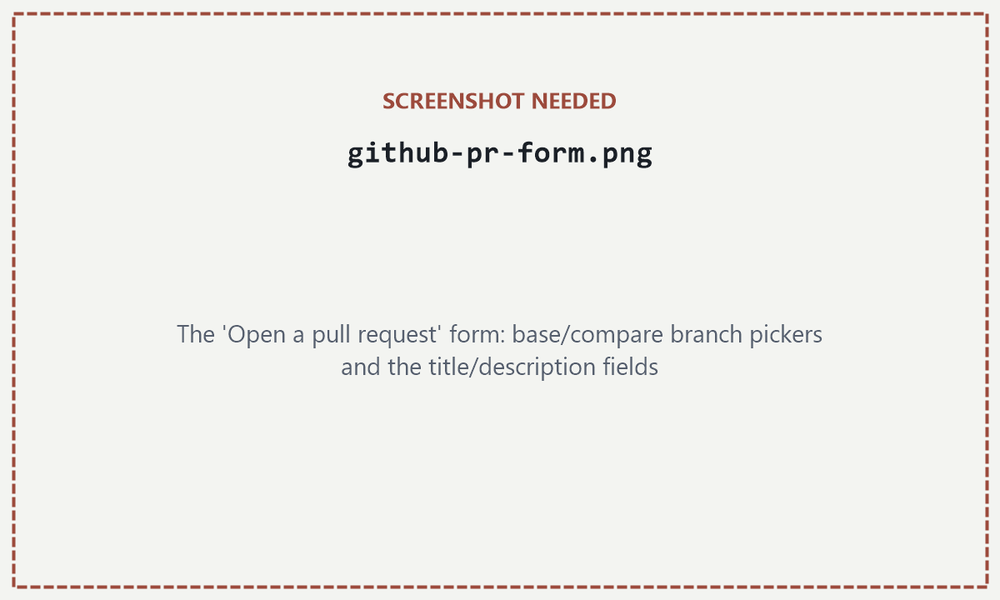

3Contributing
3.1Your first contribution, start to finish
The whole loop on one screen. Say you want to add notes for PHM5001 lecture 3 — each step links to the section that explains it properly.
- Sync — click the sync icon in VS Code's status bar so you start from the latest
main(§3.4). - Branch — create
yourname/phm5001-lecture-3(§3.3). - Create the file —
PHM5001/notes/lecture-03-<topic>.md. Folder and naming: §1.3; what a good note looks like: §4.3. - Write, then commit — Markdown basics and how to paste images: §4.2. Then Source Control panel → short message → Commit (§3.3).
- Push — click Sync Changes (§3.3).
- Open a pull request on GitHub (§3.8).
- Respond to review — push more commits to the same branch; they join the PR automatically (§3.8).
- Merge once approved — your notes are on
mainfor everyone.
First time here? Do the one-time setup in §2 first. And if all you want is to fix a typo or add a couple of lines, you don't need this page at all — the web-editor path in §1.2 does the branch and PR for you, in the browser.
3.2How a change gets into main
Nobody pushes straight to main. Every change — yours or anyone else's — arrives as a branch, then a pull request, then a review, then a merge.
main independently, commit on their own branch, and each open a pull request to merge back in. main only ever changes at a merge point — never from a direct commit.3.3Branches — yours to create
A branch is your own copy of the repository's history. You can edit and commit on it without touching main. Everyone gets their own.
main stays exactly as it was until you're ready to merge your branch back in.To make sure you're branching off the latest version, sync first: click the sync icon (circular arrows) in VS Code's bottom status bar. Then create your branch:
- Click the branch name in the bottom-left status bar.

Bottom-left status bar: current branch name. (Source: VS Code docs.) - Choose + Create new branch…, type a name like
yourname/short-topic, and press Enter.
+ Create new branch… — e.g. priya/phm5003-notes. Say whose branch it is and roughly what it's for. (Source: VS Code docs.)
Prefer the terminal?
git checkout main
git pull
git checkout -b yourname/short-topic
git push -u origin yourname/short-topicFrom here, edit files and save as normal. To save a checkpoint of your work:
- Open the Source Control panel (icon in the left sidebar). Your changed files are listed there. Type a short message describing what changed, then click the checkmark Commit button.

Source Control panel: message box, then Commit. (Source: VS Code docs.) - Click Sync Changes to send your commit to GitHub.

Sync Changes — pushes your commit to your branch on GitHub. (Source: VS Code docs.)
Prefer the terminal?
git add .
git commit -m "short description of the change"
git push3.4Keeping your branch current
While you're working, other people's PRs are merging into main. If you don't pull those changes in, your branch drifts — and the drift shows up as conflicts later, often weeks of them at once, on the day you finally open a PR.
Do this often, ideally daily if you're actively working on a branch. Click the sync icon in VS Code's status bar, or:
git checkout yourname/short-topic
git pull origin mainIf nobody touched the same lines you did, this finishes silently. If they did, see §3.5.
3.5Merge conflicts, explained
A conflict happens when two branches edit the same lines of the same file, starting from the same original version. Git merges non-overlapping changes automatically — it can't guess which of two edits to the same sentence you actually want.
VS Code shows you this visually — you don't need to hand-edit raw text to fix it. Open the conflicted file and you'll see coloured blocks with inline buttons:

- For each conflict, click Accept Current Change, Accept Incoming Change, or Accept Both Changes — or edit the text by hand if the right answer is a combination of the two. Decide what the line should actually say; it might be your version, theirs, both, or something new.
- Save the file.
- Go to Source Control. The resolved file shows as staged — write a commit message (or accept the pre-filled one) and click Commit, then Sync Changes.
What VS Code's buttons are actually resolving — git doesn't delete either version, it inserts both into the file, wrapped in markers:
<<<<<<< HEAD
Insulin lowers blood glucose by triggering GLUT4 uptake in muscle cells.
=======
Insulin lowers blood glucose via glycogen synthesis in the liver.
>>>>>>> coursemate-branch<<<<<<< HEAD— everything below this, down to the next marker, is your current version.=======— the divider between the two versions.>>>>>>> coursemate-branch— everything above this, since the divider, is their version.
"Accept Current" keeps the first block and deletes the rest. "Accept Incoming" keeps the second block. "Accept Both" keeps both, markers removed. Editing by hand means deleting all three marker lines yourself and typing whatever the merged line should say.
If a conflict looks bigger than a few lines and you're not sure what the other person meant, ask them — in the PR, in Discussions, wherever's fastest. Guessing wrong and merging it is worse than leaving a conflict open for a day.
3.6Your personal/ folder
Every module has a personal/ folder that git ignores completely. Nothing inside it — other than its own README — can be committed, pushed, or accidentally shared, no matter what you do.
Use it for drafts, half-formed notes, or annotations on someone else's notes that you're not ready — or don't want — to share. When something in there is ready for main, copy the finished version into notes/ (or wherever it belongs) and commit that copy.
3.7Common situations
SituationI started editing directly on main by mistake
git switch -c yourname/short-topicThis moves your uncommitted changes onto a brand-new branch and leaves main untouched. Commit from there as normal.
SituationI have uncommitted changes but need to pull the latest main
git stash
git pull origin main
git stash popstash sets your changes aside temporarily; pop brings them back on top of the branch you just updated.
SituationGitHub says my PR has a conflict, but I don't see one locally
Your branch is probably behind main on GitHub even though it's current on your machine. Repeat §3.4, resolve anything that surfaces locally, then push again.
SituationI want to undo my last commit, but keep the changes
git reset --soft HEAD~1This uncommits without discarding any edits — they go back to being staged, ready to redo. Only use this if you haven't pushed that commit yet.
SituationI pushed something I didn't mean to share
Move the content into personal/, commit its removal from the tracked location, and push. If it's sensitive rather than just unfinished, say so in the PR or message the maintainer directly — a removed file is still visible in the repo's history.
3.8Opening a pull request
Once your branch is where you want it:
- Pull
mainin one more time (§3.4) and resolve anything that comes up (§3.5) — do this locally, it's easier than resolving inside GitHub's web editor. - Push your branch (Sync Changes in VS Code).
- On GitHub, after a push you'll usually see a banner offering to open one directly:

Or: repo → Pull requests tab → New pull request. (Source: GitHub docs.) - Base
main← compareyourname/short-topic. Write a short description — what you added or changed, and which lecture or topic it covers.
Base/compare branch pickers, then a title and description. (Still a placeholder — GitHub's docs don't have a standalone shot of this exact non-fork form; see screenshots/README.md.) - Wait for review. If something needs changing, push new commits to the same branch — they'll appear on the same PR automatically.
- Once approved, merge.
mainupdates, and everyone's next pull picks it up.